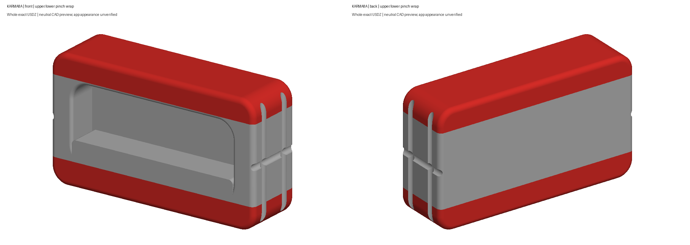
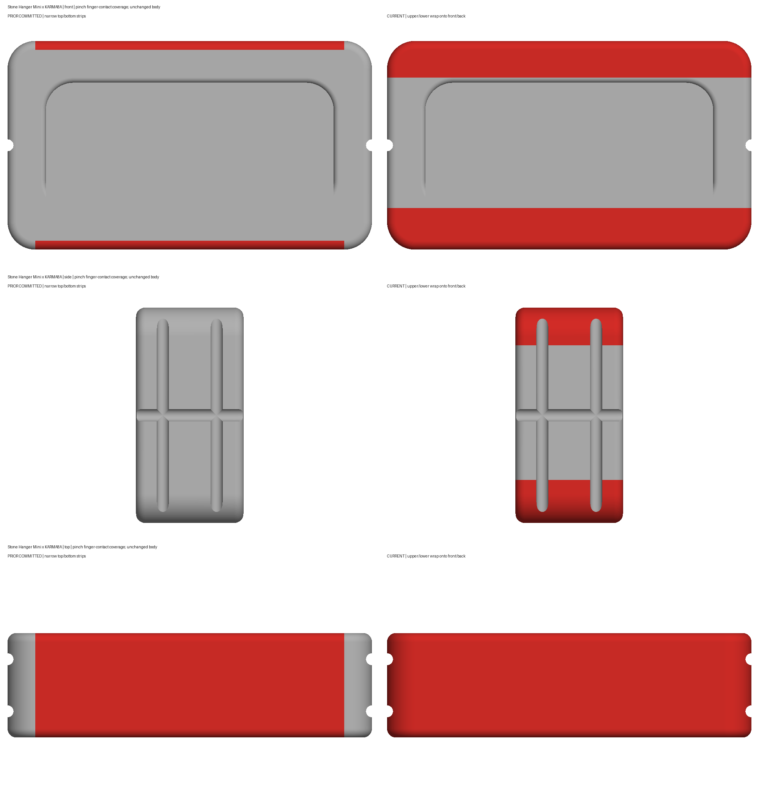
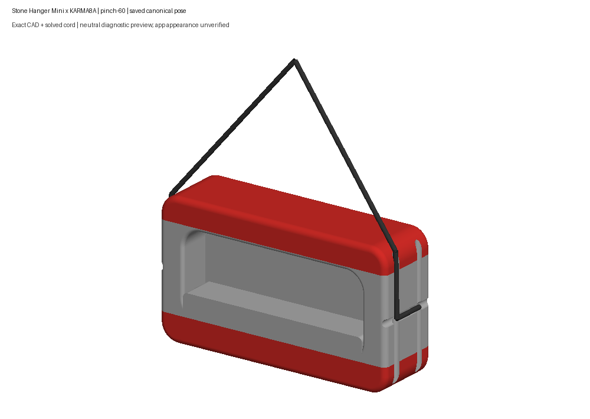
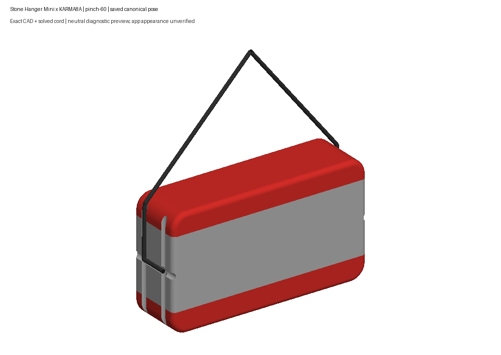
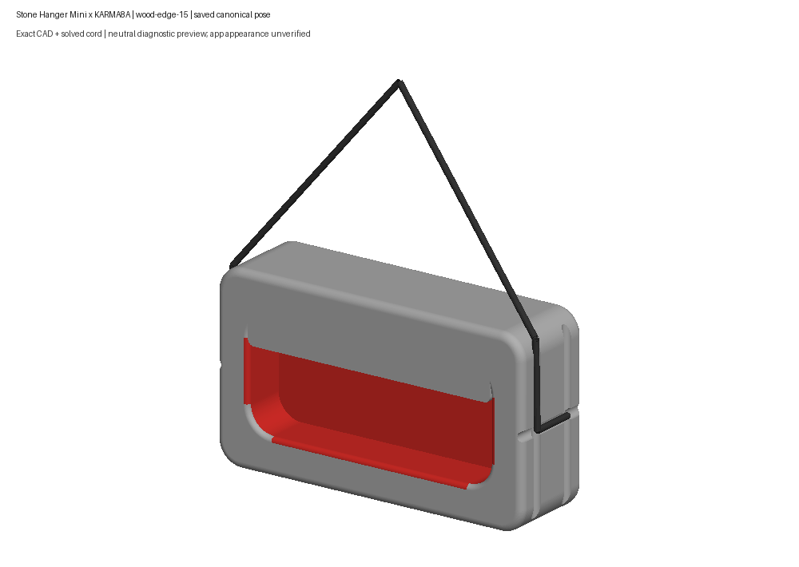
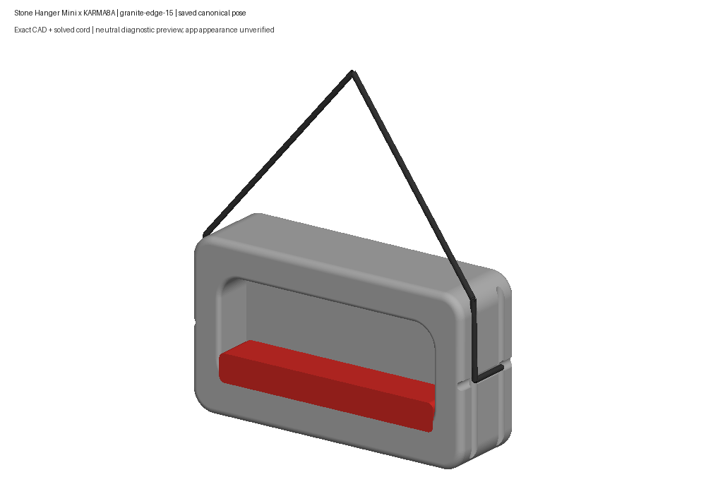

Upper/lower pinch rails wrap onto front/back finger-contact surfaces and end shoulders. Neutral exact CAD previews; current app appearance unverified. Human review pending.
Review notes · Validation · Human feedback






Does the wrap look right now?